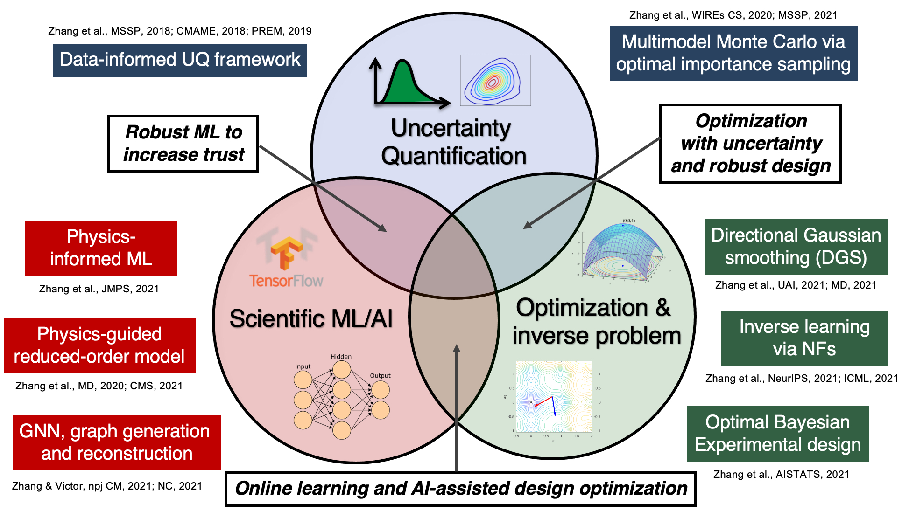
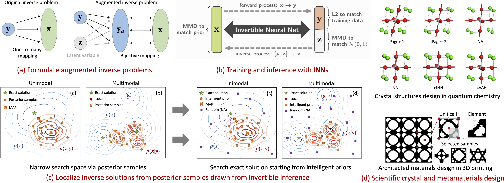
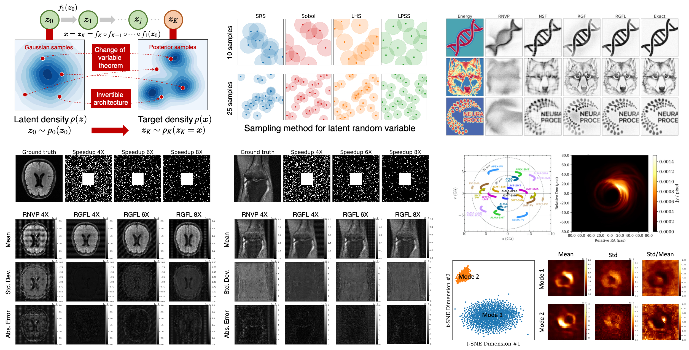
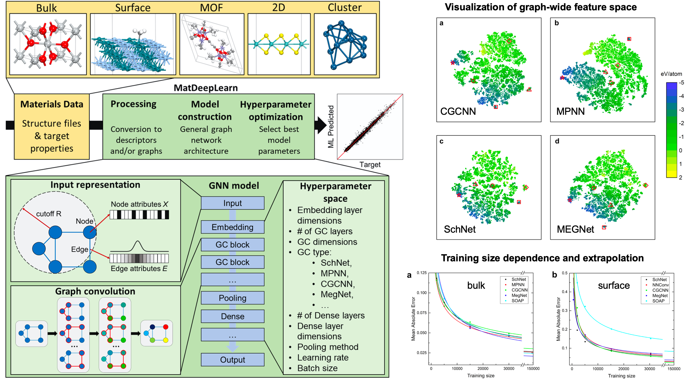
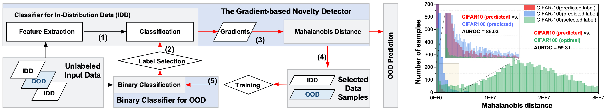
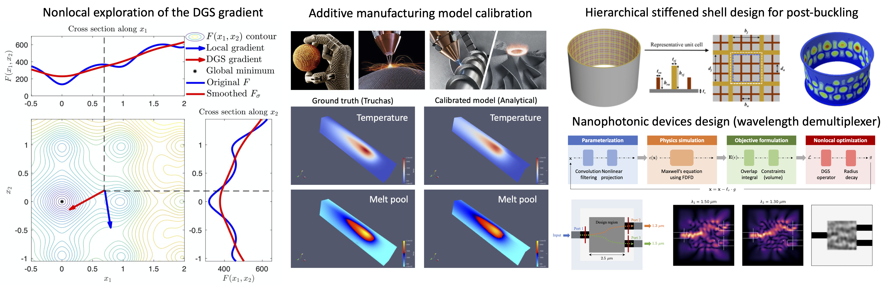
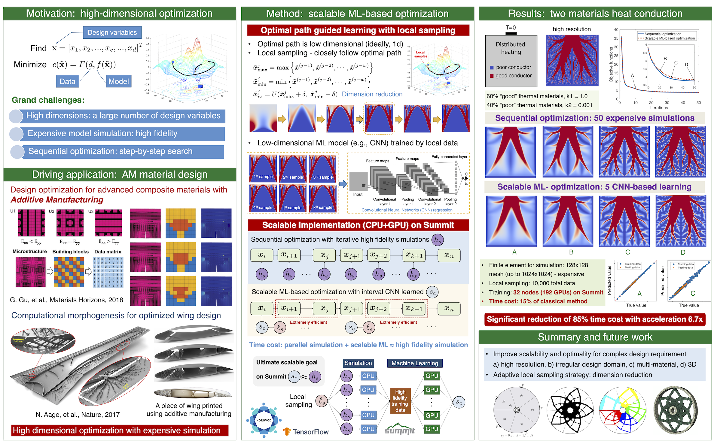
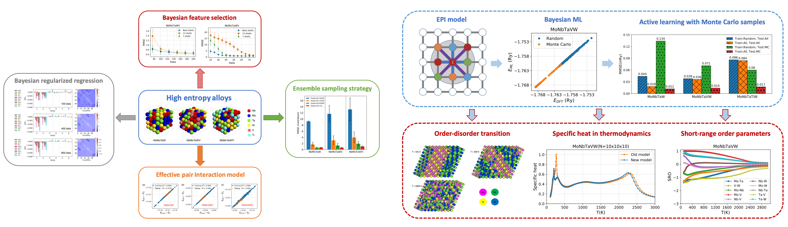
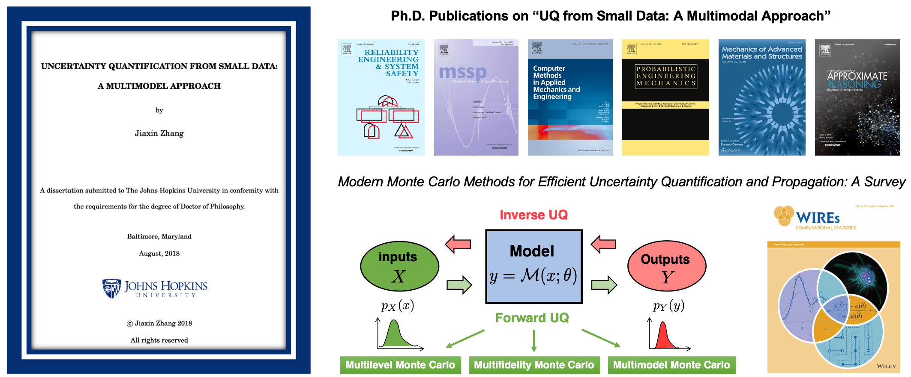

The overall objective is to develop foundational methods for efficient and robust learning, design and decision-making in complex science and engineering problems.

Accelerated Inverse Learning with Invertible Neural Networks [2021-now]
We propose a novel approach leveraging recent advances in deep invertible models incorporated with a precise localization via gradient descent for efficiently and accurately solving inverse problems and apply to advanced materials design and discovery.

[1] Jiaxin Zhang, Victor Fung.
Efficient Inverse Learning for Materials Design and Discovery. In ICLR 2021 Workshop on Science and Engineering of Deep Learning.
[2] Victor Fung, Jiaxin Zhang, Guoxiang Hu, P Ganesh, Bobby G Sumpter.
Inverse design of two-dimensional materials with invertible neural networks. In Nature Communications, 2021 (in review).
Uncertainty-Aware Inverse Learning with Normalizing Flows [2021-now]
We propose a deep variational framework that leverages a generative flow to learn an approximate posterior distribution for UQ. To perform accurate uncertainty estimation, we propose a robust flow-based model where the stability is enhanced by adding bi-directional regularization and the flexibility is improved by using gradient boosting. We demonstrate our method on several benchmark tasks and two real-world applications (FastMRI and black hole image reconstruction) and show that it achieves a reliable and high-quality reconstruction with accurate uncertainty estimation.

[1] Jiaxin Zhang, Jan Drgona, Sayak Mukherjee, Mahantesh Halappanavar, Frank Liu.
Variational Generative Flows for Reconstruction Uncertainty Estimation. In ICML 2021 Workshop on Uncertainty & Robustness in Deep Learning.
Graph Neural Networks for Materials Chemistry [2021-now]
We present a workflow and testing platform, MatDeepLearn
Github repository, for quickly and reproducibly assessing and comparing GNNs and other machine learning models, and we use this platform to optimize and evaluate a selection of top performing GNNs on several representative datasets in computational materials chemistry.

[1] Victor Fung, Jiaxin Zhang, Eric Juarez, Bobby Sumpter.
Benchmarking graph neural networks for materials chemistry. In npj Computational Materials 7, 84, 2021.
Self-Supervised Anomaly Detection [2021-now]
Anomaly Detection aims to automatically identify out-of-distribution (OOD) data, without any prior knowledge of them. It is a critical step in data monitoring, behavior analysis and other applications, helping enable continual learning in the field. Conventional methods of OOD detection perform multi-variate analysis on an ensemble of data or features, and usually resort to the supervision with OOD data to improve the accuracy. In reality, such supervision is impractical as one cannot anticipate the anomalous data.
We propose a novel, self-supervised approach that does not rely on any pre-defined OOD data, and achieves higher accuracy than previous supervised methods across all benchmarks. We perform a comprehensive evaluation of the proposed method across multiples datasets, namely, CIFAR-10, CIFAR-100, and ImageNet. The proposed approach consistently outperforms state-of-the-art supervised and unsupervised methods in the area under the receiver operating characteristic (AUROC) and area under the precision-recall curve (AUPR) metrics.

[1] Jingbo Sun, Li Yang, Jiaxin Zhang, Frank Liu, Mahantesh Halappanavar, Deliang Fan, Yu Cao.
Self-supervised Novelty Detection for Continual Learning: A Gradient-based Approach Boosted by Binary Classification. In IJCAI 2021 Workshop on Continual Semi-Supervised Learning.
[2] Jingbo Sun, Li Yang, Jiaxin Zhang, Frank Liu, Mahantesh Halappanavar, Deliang Fan, Yu Cao. Gradient-based Novelty Detection Boosted bySelf-supervised Binary Classification. In NeurIPS 2021 (in review).
Stochastic Gradient Free Bayesian Experimental Design [2020-2021]
Bayesian experimental design (BED) is to answer the question that how to choose designs that maximize the information gathering. For implicit models, where the likelihood is intractable but sampling is possible, conventional BED methods have difficulties in efficiently estimating the posterior distribution and maximizing the mutual information (MI) between data and parameters. We propose a novel approach that leverages recent advances in stochastic approximate gradient ascent incorporated with a smoothed variational MI estimator for efficient and robust BED. Without the necessity of pathwise gradients, our approach allows the design process to be achieved through a unified procedure with an approximate gradient for implicit models. Several experiments show that our approach outperforms baseline methods, and significantly improves the scalability of BED in high-dimensional problems

[1] Jiaxin Zhang, Sirui Bi, Guannan Zhang.
A Scalable Gradient Free Method for Bayesian Experimental Design with Implicit Models. In Proc. 24th International Conference on Artificial Intelligence and Statistics (AISTATS 2021).
[2] Jiaxin Zhang, Sirui Bi, Guannan Zhang.
A hybrid gradient method to designing Bayesian experiments for implicit models. In NeurIPS 2020 Workshop on Machine Learning and the Physical Sciences.
Directional Gaussian Smoothing for High-Dimensional Optimization [2020-2021]
We develop a nonlocal gradient operator, Directional Gaussian smoothing (DGS), to skip small local optima and capture major structures of the loss’s landscape in black-box optimization, specifically high-dimensional cases (e.g., scale to 2000D). We have successfully applied DGS for a couple of scientific applications, including advanced materials design, structural optimization, heat conduction model calibration in additive manufacturing.

[1] Jiaxin Zhang, Hoang Tran, Dan Lu, Guannan Zhang.
Enabling Long-range Exploration in Minimization of Multimodal Functions. In Proc. 37th Conference on Uncertainty in Artificial Intelligence (UAI 2021).
[2] Jiaxin Zhang, Sirui Bi, Guannan Zhang.
A directional Gaussian smoothing optimization method for computational inverse design in nanophotonics. In Materials & Design 197, 109213, 2021.
[3] Jiaxin Zhang, Sirui Bi, Guannan Zhang.
A nonlocal-gradient descent method for inverse design in nanophotonics. In NeurIPS 2020 Workshop on Machine Learning for Engineering Modeling, Simulation and Design.
Scalable Deep-Learning-Accelerated Topology Optimization [2019-2020]
Topology optimization (TO) is a popular and powerful computational approach for
designing novel structures, materials, and devices. Two computational challenges
have limited the applicability of TO to a variety of industrial applications. First,
a TO problem often involves a large number of design variables to guarantee
sufficient expressive power. Second, many TO problems require a large number of
expensive physical model simulations, and those simulations cannot be parallelized.
To address these issues, we propose a general scalable deep-learning (DL) based
TO framework, referred to as SDL-TO, which utilizes parallel schemes in high
performance computing (HPC) to accelerate the TO process for designing additively
manufactured (AM) materials. Unlike the existing studies of DL for TO, our
framework accelerates TO by learning the iterative history data and simultaneously
training on the mapping between the given design and its gradient. The surrogate
gradient is learned by utilizing parallel computing on multiple CPUs incorporated
with a distributed DL training on multiple GPUs. The learned TO gradient enables
a fast online update scheme instead of an expensive update based on the physical
simulator or solver. Using a local sampling strategy, we achieve to reduce the
intrinsic high dimensionality of the design space and improve the training accuracy
and the scalability of the SDL-TO framework.

[1] Jiaxin Zhang, Sirui Bi, Guannan Zhang.
Scalable deep-learning-accelerated topology optimization for additively manufactured materials. In NeurIPS 2020 Workshop on Machine Learning for Engineering Modeling, Simulation and Design.
Thermodynamics of High Entropy Alloys: A Data-Driven Approach [2019-2020]
High entropy alloys (HEAs) are promising next-generation materials due to their various excellent properties. To understand these properties, it’s necessary to characterize the chemical ordering and identify order-disorder transitions through efficient simulation and modeling of thermodynamics. In this study, a robust data-driven framework based on Bayesian approaches is proposed for the accurate and efficient prediction of configurational energy of high entropy alloys. The recently proposed effective pair interaction (EPI) model with ensemble sampling is used to map the configuration and its corresponding energy. Given limited data calculated by first-principles calculations, Bayesian regularized regression not only offers an accurate and stable prediction but also effectively quantifies the uncertainties associated with EPI parameters.
We further introduce a data-driven approach to construct the effective Hamiltonian and study the thermodynamics of HEAs through canonical Monte Carlo simulation. The main characteristic of our method is to use pairwise interactions between atoms as features and systematically improve the representativeness of the dataset using samples from Monte Carlo simulation. We find this method produces highly robust and accurate effective Hamiltonians that give less than 0.1 mRy test error for all the three refractory HEAs: MoNbTaW, MoNbTaVW, and MoNbTaTiW. Using replica exchange to speed up the MC simulation, we calculated the specific heats and short-range order parameters in a wide range of temperatures.

[1] Jiaxin Zhang, Xianglin Liu, Sirui Bi, Junqi Yin, Guannan Zhang, Markus Eisenbach.
Robust data-driven approach for predicting the configurational energy of high entropy alloys. In Materials & Design 185, 108247, 2020.
[2] Xianglin Liu, Jiaxin Zhang, Junqi Yin, Sirui Bi, Markus Eisenbach, Yang Wang.
Monte Carlo simulation of order-disorder transition in refractory high entropy alloys: a data-driven approach. In Computational Materials Science 187, 110135, 2021.
Uncertainty Quantification From Small Data: A MultiModel Approach [2014-2018]
As a central area of computational science and engineering (CSE), uncertainty quantification (UQ) is playing an increasingly important role in computationally evaluating the performance of complex mathematical, physical and
engineering systems. UQ includes the quantification, integration, and propagation of uncertainties that result from stochastic variations in the natural
world as well as uncertainties created by lack of statistical data or knowledge
and uncertainty in the form of mathematical models. A common situation in
engineering practice is to have a limited cost or time budget for data collection
and thus to end up with sparse datasets. This leads to epistemic uncertainty
(lack of knowledge) along with aleatory uncertainty (inherent randomness),
and a mix of these two sources of uncertainties (requiring imprecise probabilities) is a particularly challenging problem.
A novel methodology is proposed for quantifying and propagating uncertainties created by lack of data. The methodology utilizes the concepts of multimodel inference from both information-theoretic and Bayesian perspectives to identify a set of candidate probability models and associated model probabilities that are representative of the given small dataset. Both model-form
uncertainty and model parameter uncertainty are identified and estimated
within the proposed methodology. Unlike the conventional method that reduces the full probabilistic description to a single probability model, the proposed methodology fully retains and propagates the total uncertainties quantified from all candidate models and their model parameters. This is achieved
by identifying an optimal importance sampling density that best represents
the full set of models, propagating this density and reweighting the samples
drawn from the each of candidate probability model using Monte Carlo sampling. As a result, a complete probabilistic description of both aleatory and
epistemic uncertainty is achieved with several orders of magnitude reduction
in Monte Carlo-based computational cost.
Along with the proposed new UQ methodology, an investigation is provided
to study the effect of prior probabilities on quantification and propagation of
imprecise probabilities resulting from small datasets. It is illustrated that
prior probabilities have a significant influence on Bayesian multimodel UQ
for small datasets and inappropriate priors may introduce biased probabilities as well as inaccurate estimators even for large datasets. When a multidimensional UQ problem is involved, a further study generalizes this novel
UQ methodology to overcome the limitations of the independence assumption by modeling the dependence structure using copula theory. The generalized approach achieves estimates for imprecise probabilities with copula dependence
modeling for a composite material problem. Finally, as applications of the proposed method, an imprecise global sensitivity analysis is performed to illustrate the efficiency and effectiveness of the developed novel multimodel UQ
methodology given small datasets.

[1] Jiaxin Zhang.
Modern Monte Carlo methods for efficient uncertainty quantification and propagation: A survey. In Wiley Interdisciplinary Reviews: Computational Statistics e1539, 2020.
[2] Jiaxin Zhang, Stephanie TerMaath, Michael Shields.
Imprecise global sensitivity analysis using bayesian multimodel inference and importance sampling. In Mechanical Systems and Signal Processing 148, 107162, 2020.
[3] Jiaxin Zhang, Michael Shields.
On the quantification and efficient propagation of imprecise probabilities with copula dependence. In International Journal of Approximate Reasoning 122, 24-46, 2020.
[4] Jiaxin Zhang, Michael Shields, Stephanie TerMaath.
Probabilistic modeling and prediction of out-of-plane unidirectional composite lamina properties. In Mechanics of Advanced Materials and Structures 1-17, 2020.
[5] Jiaxin Zhang, Michael Shields.
Efficient Monte Carlo resampling for probability measure changes from Bayesian updating. In Probabilistic Engineering Mechanics 55, 54–66, 2019.
[6] Jiaxin Zhang, Michael Shields.
The effect of prior probabilities on quantification and propagation of imprecise probabilities resulting from small datasets. In Computer Methods in Applied Mechanics and Engineering 334, 483–506, 2018.
[7] Jiaxin Zhang, Michael Shields.
On the quantification and efficient propagation of imprecise probabilities resulting from small datasets. In Mechanical Systems and Signal Processing 98, 465–483, 2018.
[8] Michael Shields, Jiaxin Zhang.
The generalization of Latin hypercube sampling. In Reliability Engineering & System Safety 148, 96–108, 2016.